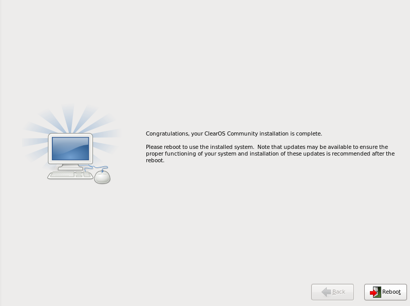

Prev
Next
1.11. Installation Complete
Congratulations! Your ClearOS installation is now complete!
The installation program prompts you to prepare your system for reboot. Remember to remove any installation media if it is not ejected automatically upon reboot.

Prev
1.10. Installing Packages
Up
Home
Next
Chapter 2. Network Console